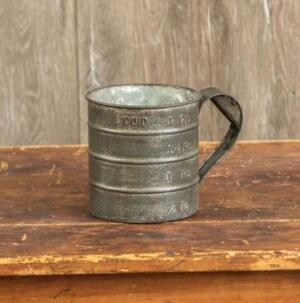

ϩⲧⲟⲡ SB, -ⲁⲡ Sa nn m, a measure (cf Berl Wörterb 3 196): K 127 B husbandman's tools ⲛⲓϩ. (var ϩⲟⲧⲡ) صفائح tin vessels; CO 350 S ⲉϣⲱⲡⲉ ⲟⲩⲟⲛ ϫⲁⲕ ⲙⲙⲁⲩ ϫⲟⲟⲩ ⲟⲩⲕⲟⲩⲓ … ϣⲁⲡϣⲁⲩ ⲛϫⲟⲩⲱⲧ ⲛϩ., Vi ostr 164 Sa ⲥⲛⲁⲩ ⲛϩ. ⲛⲛⲓⲕⲧⲉ (for ? ⲛⲉⲓⲕⲧⲉ).

ϩⲧⲟⲡ SB, -ⲁⲡ Sa nn m, a measure (cf Berl Wörterb 3 196): K 127 B husbandman's tools ⲛⲓϩ. (var ϩⲟⲧⲡ) صفائح tin vessels; CO 350 S ⲉϣⲱⲡⲉ ⲟⲩⲟⲛ ϫⲁⲕ ⲙⲙⲁⲩ ϫⲟⲟⲩ ⲟⲩⲕⲟⲩⲓ … ϣⲁⲡϣⲁⲩ ⲛϫⲟⲩⲱⲧ ⲛϩ., Vi ostr 164 Sa ⲥⲛⲁⲩ ⲛϩ. ⲛⲛⲓⲕⲧⲉ (for ? ⲛⲉⲓⲕⲧⲉ).
| view | ϩⲧⲟⲡ SB ϩⲧⲁⲡ L | (noun masculine) fall, destruction [πτωμα, πτωσις]2309 |